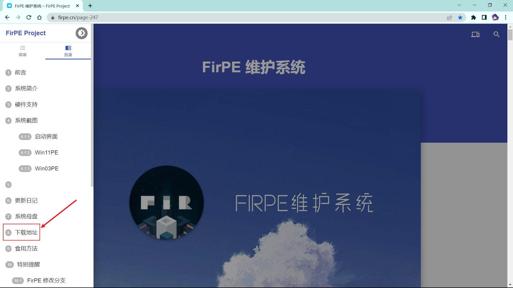
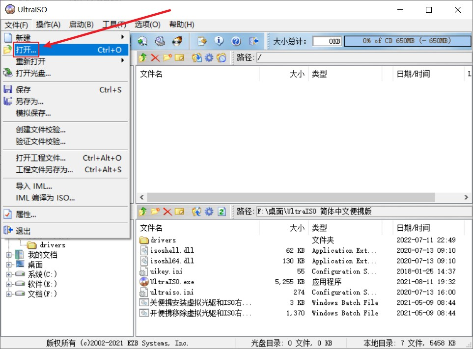

除了对ISO的筛选，对PE的选择也尤为重要。为什么这么说呢？因为PE里面植入流氓软件可比ISO要更方便。在这里推荐几款纯净无捆绑的PE。另外说一下，需要准备一个大于8G的U盘。（U盘越大越好，因为现在一个ISO基本上都在4到5个多G了，如果你需要存放多个ISO就需要大空间的U盘）
制作PE前请备份U盘里的数据，因为制作过程中会格式化U盘。
纯净无捆绑的PE
1、MediaCreationTool
网站链接： https://www.microsoft.com/zh-cn/software-download/home
优点：微软官方网站，用着放心
缺点：制作完的U盘无法存放多个ISO
下载流程
1、进入网站
2、选择版本，这里以Win11为例

3、选择下载位置
4、运行
5、下一步

6、插入U盘，选择U盘制作

2、FirPE
网站链接： https://firpe.cn/page-247
优点：纯净无捆绑
缺点：更新比较慢
下载方式
1、进入网站
2、找下载位置

3、找下载位置
4、找下载位置

5、推荐这个

6、选择下载位置

7、运行软件

8、界面展示

9、插入U盘，全新制作
10、过程
11、制作成功

12、PE页面

3、微PE
网站链接： https://www.wepe.com.cn/
优点：纯净无捆绑
下载方式
1、进入网站

2、选择下载

3、选择下载

4、选择下载位置

5、运行软件

6、界面展示

7、选择制作U盘

8、插入U盘

4、优启通
网站链接： https://www.upe.net/
优点：纯净无捆绑
下载方式
1、进入网站
2、选择下载方式，这里选择网盘分流
3、选择文件下载
4、解压缩，打开文件夹
5、运行文件
6、插入U盘，选择全新制作

5、Ventoy
网站链接： https://www.ventoy.net/cn/index.html
优点：纯净无捆绑，且可运行其他PE的ISO
缺点：兼容性不太好
下载方式
1、进入网站
2、选择下载
3、选择Windows版本
4、下载压缩包
5、选择下载
6、选择下载位置
7、解压缩包，打开文件夹
8、运行文件
9、插入U盘，安装
6、Rufus
网站链接： http://rufus.ie/zh/
优点：速度快，也可支持Linux
下载方式
1、进入网站
2、下载
3、选择下载位置
4、运行文件
5、插入U盘，选择Windows制作

7、UItraISO
链接： https://wwz.lanzoum.com/ijXIM0cmpfrc
优点：可对ISO进行改造
缺点：U盘无法放入其他ISO
下载方式
1、下载
2、解压缩，打开文件夹
3、运行文件
4、打开下载好的ISO
5、插入U盘，写入映像
6、写入映像